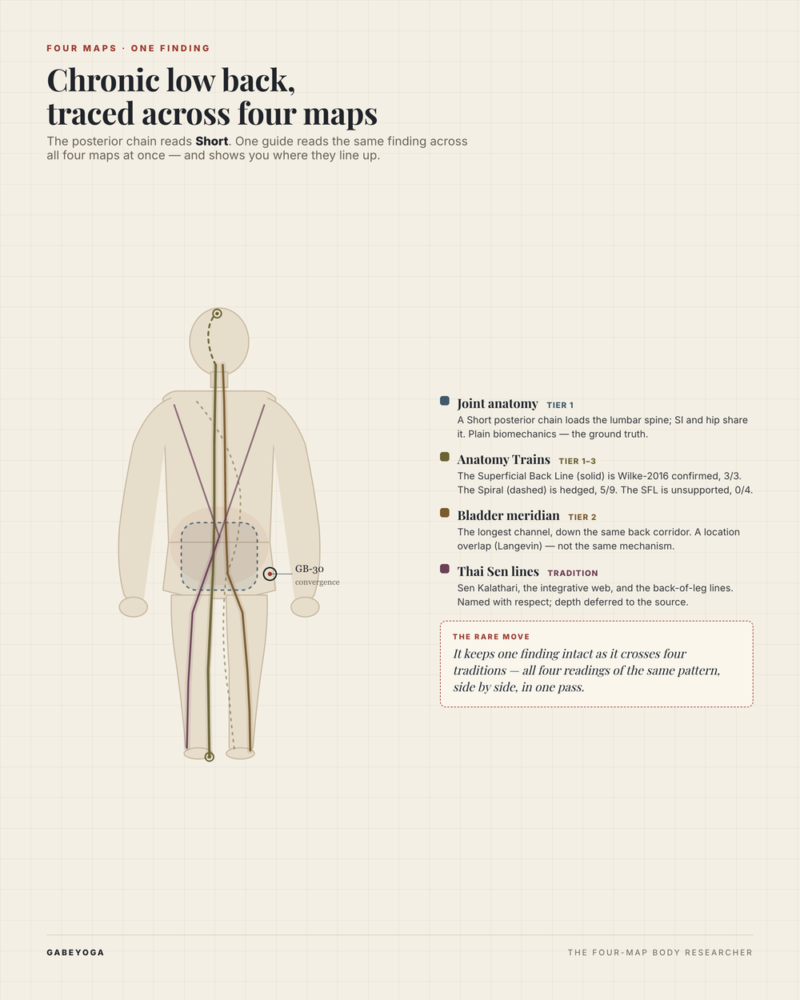
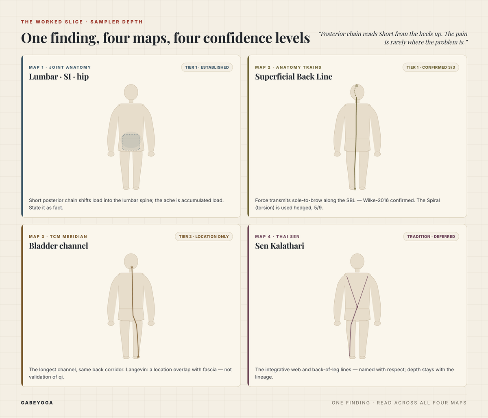

The body keeps saying the same thing in different languages.
Ever wondered how a Bladder meridian finding relates to the Superficial Back Line? Or how a Sen line observation relates to joint anatomy?
Finding: chronic low-back tightness
Strongest on the Superficial Back Line, where the research is strong (Wilke 2016). The link across maps is a shared location, not a merger — same back-of-body corridor, four different maps of it.
"These myofascial meridians shouldn't be confused with acupuncture meridians — they're lines of latitude and longitude."
— Thomas MyersTwo coordinate systems,
one body. Maps, not the terrain.
Bring it a finding — a restriction on the table, a posture in a photo, a meridian chart from the book you're studying. It reads what you show it across joint anatomy, Anatomy Trains fascia, the meridians, and the Thai Sen lines, and tells you where the four maps line up — and how far each reading can be trusted.
You don't have to translate what you're seeing into words first. Photograph the client's standing posture. Screenshot the meridian chart you're cross-referencing. Hold up a page from an Anatomy Trains diagram. The guide reads the image and traces what it sees across all four maps — naming the line, the corridor, the channel, and the biomechanics, each with how far it can be trusted. For the full visual atlas — every line and channel as a deck you can hold — it points you to the cards.

What it does that nothing else does: it keeps one finding intact as it crosses four traditions — so the fascial reading, the meridian corridor, the Sen line, and the plain biomechanics of the same pattern land side by side, in one pass, instead of fracturing into four disconnected opinions.
Each map is a different coordinate system over the same terrain — and most practitioners already work in two or three of them, half-consciously. This guide reads all four at once and keeps the registers straight: it tells you, quietly, how much evidence stands behind each map as it goes. No reading travels without that context.
The Western biomedical map: bones, joints, muscles, lever arms, load paths. The ground truth everything else is checked against.
Tier 1 · establishedThe body as continuous fascial chains. The Superficial Back Line is Wilke-2016 confirmed — but the Superficial Front Line is not. The guide says which.
Tier 1–3 · line-by-lineLangevin (2002): ~80% of acupoints sit on connective-tissue planes — shown in the arm dissected, plausible along the back but not yet demonstrated there. A location overlap, not validation of qi. Cooley's emotional layer is offered as inquiry only.
Tier 2 · location onlyNamed with respect — Sen Kalathari, the back-of-leg lines — and deferred to the source. The tool authors no new lineage claims.
Tradition · depth deferredAnyone can recite anatomy from four traditions. The rare move — the one that takes thirty years across the lineages to build — is carrying one finding across all four maps in a shared vocabulary, so it stays one finding instead of fracturing into four. That vocabulary is the Joint Dialogue Method's: words for what tissue is doing, before any map's theory of why.
Replaces "tight" and "weak." A tissue-behavior word every map can receive — because it commits to no mechanism.
Background · Annoyed · Pain · Injury. A 0–4 sensation ladder. How the body reports, underneath all four maps.
The Cup. Reframes a local finding as a systemic one — the move all four maps are trying to make.
Plain-language tensegrity: a short rope pulls the whole structure. Why "the problem is never where the pain is."
Release as a gel shifting from sticky to fluid — a fascial mechanism, named without borrowing energetic language.
The investigative spine. The shared premise of all four maps: look up the chain. The permission to translate at all.
The skill is the bridge, not the anatomy recital. One finding enters, stays one finding across four maps, and leaves tagged with exactly how sure we can be about each.
One finding, carried across all four maps, each step tagged with its evidence tier. This is the whole method on a single region — the entry point into a frame built to grow.
Re-integrated in the bridge vocabulary: read as a Tent, the short posterior rope pulls the structure; read as a Cup, the low back is where the load overflows. The finding never changed — four maps described it at four confidence levels.

A short walkthrough of the guide carrying one finding across joint anatomy, the fascial lines, the meridians, and the Sen tradition — each reading tagged with how far it can be trusted.
A guide is only as good as the weakest claim it's willing to stand behind. This one reports evidence exactly as it falls, even inside a single tradition: in the same Anatomy Trains review, the Superficial Back Line came back confirmed and its sibling the Superficial Front Line came back unsupported. A tool that tells you that will tell you the truth about the rest.
Wilke et al. (2016) found strong evidence for the SBL's myofascial continuity. This is the line we stand on for the posterior chain.
In the same review, the SFL had no verified transitions. We won't lean on it — and we say so out loud. The evidence isn't uniform even within Anatomy Trains.
Open the live demo and ask it one finding — no signup. Or load the folder into your own Claude Project for the full thing.
claude.ai → Projects → New.
Add identity.md, rules.md, examples.md, anti-examples.md, and the whole reference/ folder.
Custom instructions: "You are Bodyworker's Compass in identity.md. Follow rules.md. Always read reference/evidence-floor.md before answering anything about the body."
Don't add anything under _atlas/ — that's the private layer, not part of the public guide.
"Walk me through a chronic low-back client across all four maps." Watch it translate, tier by tier.
The guide carries one region at sampler depth — riding entirely inside the free card sampler. The full multi-region atlas, the lineage teaching, and the clinical depth are in the products.
The visual bridge across all three energy systems — meridian, Anatomy Trains, and Sen lines — as a deck you can hold.
See the cardsThe Joint Dialogue Method and the teaching library — the investigative spine and the depth behind the bridge.
See the booksIt does the more useful thing: it shows you exactly where the maps converge — the same back-of-body corridor — and where they diverge in mechanism and evidence. You get four honest readings of one finding, not a forced merger. That distinction is what lets you actually use all four maps without pretending they're interchangeable.
No. It's a research and translation tool for practitioners, not a clinician. It maps how the four systems each describe a pattern, with the evidence behind each — so you bring sharper questions to a hands-on assessment.
No. Langevin's finding is a location correlation between acupoints and connective-tissue planes — not validation of qi. Sen lines are named as tradition, with depth deferred to the lineage source.
It names the lines and their physical territory and points you to the source. The lineage teaching belongs to the tradition (teacher Pichest Boonthume's) and Gabe's books and decks — that's where that knowledge lives.
The public version demonstrates the method on chronic low-back / posterior chain at sampler depth. The full multi-region atlas is the deeper tool the cards and books point to. One honest slice, a frame built to grow.